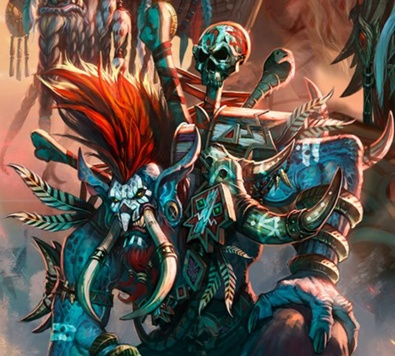

Vol'jin
Vol’jin es el hijo y antiguo aprendiz de Sen’jin, líder de la tribu Lanza Negra exiliados de una pequeña cadena de islas de Vega de Tuercespina . Durante este período de tiempo, los Trols Lanza Negra fueron casi exterminados por la invasión humana, así como constantes incursiones de Múrlocs .Sólo a través de la oportuna intervención de Thrall y los orcos , los trolls pudieron sobrevivir. Sen’jin murió valientemente en las islas tratando de salvar a su pueblo. Con la muerte de Sen’jin, Vol’jin se convirtió en jefe de la tribu. Con el fin de pagar Thrall por salvar a su pueblo, Vol’jin prometió su lealtad y servicio a laHorda .
Vol’jin estableció a la tribu en las Islas Eco, frente a las costas de Durotar. No pasó mucho tiempo antes de una nueva amenaza aparezca. La flota expedicionaria del Gran Almirante Daelin Proudmoore decidió atacar. Vol’jin fue ayudado por Rexxar , Rokhan y Chen Stormstout en la evacuación de la tribu Lanza Negra. Los tres montaron wyverns, los cuales les permitian atacar a la flota de la Alianza desde el aire. A pesar de todo, se vio obligado a retirarse debido a la inferioridad númerica de sus tropas. Vol’jin continuó ayudando a Rexxar , Rokhan y a Chen a través de sus sabios consejos, instruyendo a Rexxar para que lograra reclutar a tauren y ogros en la lucha contra los humanos .
Después de ayudar a la Horda a repeler la invasión humana, Vol’jin llevó de vuelta a su tribu a las Islas del Eco . Por desgracia, un médico brujo llamado Zalazane usó magia negra para esclavizar a muchos de sus hermanos, obligando a Vol’jin a ordenar la retirada hacia el continente, temía que toda su tribu se convirtiera en víctima del brujo loco. Vol’jin entonces fundó la aldea Sen’jin, a lo largo de la costa sur de Durotar, como base con el que devolver el golpe a Zalazane. Sin embargo, fue llamado a Orgrimmar para ayudar a Thrall, dejando a la reconquista de la casa de su pueblo al Maestro Gadrin.
A pesar de las incursiones de los infantes de marina de Kul Tiras persisten en Los Baldíos y Durotar , estas invasiones son menores amenazas y no están directamente dirigidas al Poblado Sen’jin.
